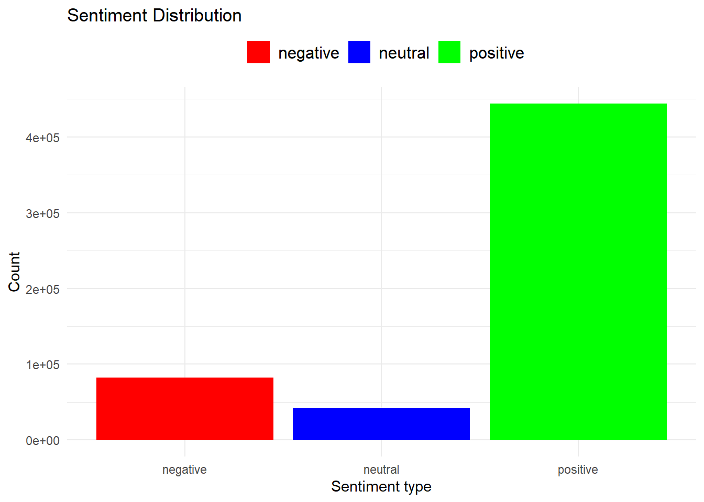
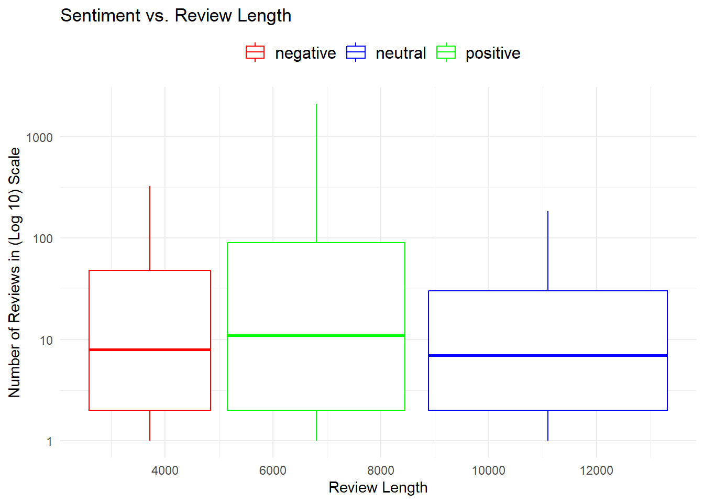
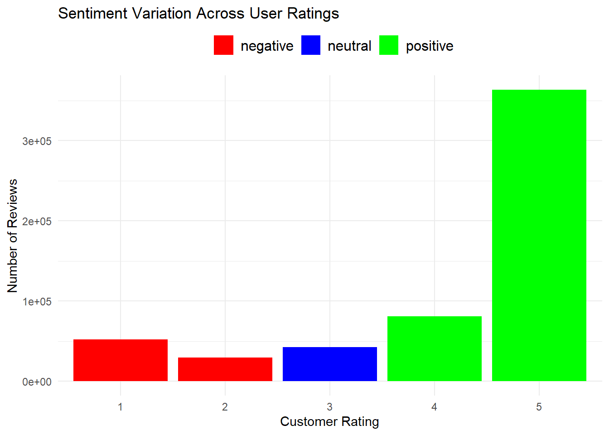

Sentiment Analysis on Amazon Fine Food Reviews Data1
The objective of this analysis is to answer 5 business questions using the Amazon Fine Food Reviews Data.
What is the overall sentiment distribution of the reviews?
How does the sentiment change over time?
Are there any specific products that consistently receive positive or negative reviews?
Do certain review lengths tend to have more positive or negative sentiment?
How does the sentiment differ between different user ratings (e.g., 1-star, 5-star)?
The Data
The dataset consists of reviews of fine foods from amazon. The data span a period of more than 10 years, including all 568,454 reviews up to October 2012. Reviews include product and user information, ratings, and a plain text review.
The dataset is available on Kaggle. The data has the following columns and their descriptions:
Column Name
Column Description
Id
A unique identifier for each review.
ProductId
The unique identifier of the product being reviewed
UserId
The unique identifier of the user who wrote the review
ProfileName
The profile name of the user who wrote the review
HelpfulnessNumerator
The number of users who found the review helpful
HelpfulnessDenominator
The total number of users who voted on the review’s helpfulness
Score
The rating given by the user (ranging from 1 to 5, where 5 is the highest)
Time
The timestamp of when the review was posted
Summary
A brief summary of the review’s content
Text
The main body of the review, containing the detailed comments and opinions
The review dataset has 568454 rows. Lets view the data to understand its structure and composition.
Click to show code
# Display the first 500 rows of imported datadatatable( amzn_data[1:500,],filter ="top",caption ="The first 500 rows of loaded data.",options =list(pageLength =50,scrollY ="500px",scrollX =TRUE))
Data Properties
To understand the data composition, the class of each variable together with the number and proportion of missing values for each variable will provide a deeper insight to the data structure and how it could be useful for analysis.
Click to show code
# Check for class of each variableclass_table <-sapply(amzn_data, class)class_table <-data.frame(Variable =names(class_table),Class =as.character(class_table),stringsAsFactors =FALSE)# Check for the proportion of missing values in full datax <-data.frame(miss =colSums(is.na(amzn_data)), prop =round((colSums(is.na(amzn_data)) /nrow(amzn_data)) *100, 2))properties <-cbind(class_table,Values_missing = x[, 1],Proportion_missing = x[, 2])# Display the properties of the datadatatable( properties,caption ="Table displaying the properties of the data.")
Note: Data has no missing values.
Data Cleaning and Processing
Next, we’ll clean and reformat the data by creating new variables and dropping those not needed, especially those with high proportion of missing values, then prepare for analysis.
Click to show code
amzn_cleaned <- amzn_data %>%# Step 1:Convert Time to POSIXct format and remove the day and time partsmutate(Time =as.POSIXct(Time, origin ="1970-01-01"),Time =format(Time, "%Y-%m") ) %>%# Step 2: Rename Time column to Year_Monthrename(Year_Month = Time) %>%# Step 3: Remove columns that do not provide any valuable information for sentiment classificationselect(-Id, -ProfileName, -HelpfulnessNumerator, -HelpfulnessDenominator)# Step 4: Convert text to lowercaseamzn_cleaned$Text <-tolower(amzn_cleaned$Text)# Step 5: Remove punctuation and special charactersamzn_cleaned$Text <-removePunctuation(amzn_cleaned$Text)# Step 6: Remove white spacesamzn_cleaned$Text <-stripWhitespace(amzn_cleaned$Text)# Step 7: Remove English "stopwords"amzn_cleaned$Text <-removeWords(amzn_cleaned$Text, stopwords("en"))# Display the first 500 rows of the cleaned and reformatted datadatatable( amzn_cleaned[1:500,],caption ="First 500 rows of cleaned data with new created variables.",options =list(pageLength =50,scrollY ="500px",scrollX =TRUE))
Notice how common words like “this”, “is”, and punctuation are removed from the text column, to only focus on the meaningful content of the text, which helps in reducing noise and improving accuracy of the sentiment analysis.
Sentiment Analysis
The 5 Business questions will now be answered by examining the dataset.
What is the overall sentiment distribution of the reviews?
Click to show code
# Classify sentiment based on the customer 'Score'. Score above 3 are positive, scores below 3 are negative and scores that are 3 are neutralamzn_cleaned$Sentiment <-ifelse(amzn_cleaned$Score >3,"positive",ifelse(amzn_cleaned$Score <3, "negative", "neutral") )# Count the number of reviews in each sentiment categorysentiment_counts <- amzn_cleaned %>%group_by(Sentiment) %>%summarize(Count =n())# Plot the sentiment distributionsent_dist <-ggplot(sentiment_counts, aes(x = Sentiment, y = Count, fill = Sentiment)) +geom_col() +scale_fill_manual(values =c("negative"="red","neutral"="blue","positive"="green" )) +labs(title ="Sentiment Distribution", x ="Sentiment type", y ="Count") +theme(legend.position ="top",legend.title =element_blank(),legend.text =element_text(size =12) )sent_dist

The overall sentiment distribution shows that there are more positive reviews in the data set.
How does the sentiment change over time?
Click to show code
# Monthly sentiment distributionmonthly_sentiment <- amzn_cleaned %>%group_by(Year_Month, Sentiment) %>%mutate(Sentiment =as.factor(Sentiment)) %>%summarize(Count =n())# Plot sentiment change over timesent_time <-ggplotly(ggplot( monthly_sentiment,aes(x = Year_Month, y = Count, color = Sentiment, group = Sentiment)) +geom_line(size =0.8) +theme(axis.text.x =element_text(angle =45, hjust =0.8, size =4),legend.title =element_blank(),legend.background =element_rect(fill ="white",color ="grey")) +scale_color_manual(values =c("negative"="red","neutral"="blue","positive"="green")) +labs(title ="Sentiment Change Over Time",x ="Year-Month",y ="Number of Reviews"))# Change legend position to inside the plotsent_time <- sent_time %>%layout(legend =list(x =0.1, y =0.9, xanchor ="left", yanchor ="top"))sent_time
The sentiment distribution over time shows a seasonal pattern, were there is a rise in positive reviews in the 2nd and 4th quarters of the year, and a downward trend during the the first quarter. While the negative reviews show a rise during the last quarter and a decline during the first quarter.
Are there any specific products that consistently receive positive or negative reviews?
Click to show code
# Group reviews by product and calculate sentiment distributionproduct_sentiment <- amzn_cleaned %>%group_by(ProductId, Sentiment) %>%summarize(Count =n())# Filter products with only Positive sentimentconsistently_positive <- product_sentiment %>%filter(Sentiment =="positive"& Count >0) %>%arrange(desc(Count))# Display top 50 ProductIDs with the highest positive reviewsdatatable( consistently_positive[1:50,],options =list(pageLength =25,scrollY ="500px",scrollX =TRUE),caption ="Top 50 ProductIDs with highest positive reviews.")
Click to show code
# Filter products with only Negative sentimentconsistently_negative <- product_sentiment %>%filter(Sentiment =="negative"& Count >0) %>%arrange(desc(Count))# Display top 50 ProductIDs with the highest negative reviewsdatatable( consistently_negative[1:25,],options =list(pageLength =50,scrollY ="500px",scrollX =TRUE),caption ="Top 50 ProductIDs with highest negative reviews.")
The first table shows the list of products that have high number of positive reviews, while the second table shows the products with the highest number of negative reviews.
Do certain review lengths tend to have more positive or negative sentiment?
Click to show code
# Calculate the review lengthsamzn_cleaned$ReviewLength <-nchar(amzn_cleaned$Text)# Group reviews by review length and calculate sentiment distributionreview_length_sentiment <- amzn_cleaned %>%group_by(ReviewLength, Sentiment) %>%summarize(Count =n())# Plot sentiment vs. review lengthsent_len <-ggplot(review_length_sentiment, aes(x = ReviewLength,y = Count, color = Sentiment)) +geom_boxplot() +scale_y_log10() +labs(title ="Sentiment vs. Review Length",x ="Review Length",y ="Number of Reviews in (Log 10) Scale") +theme(legend.position ="top",legend.title =element_blank(),legend.text =element_text(size =12)) +scale_color_manual(values =c("positive"="green","negative"="red","neutral"="blue"))sent_len

Negative reviews tend to be shorter than positive reviews, while neutral reviews tend to be long. It also emphasizes that there are more positive reviews then negative reviews in the data set.
How does the sentiment differ between different user ratings (e.g., 1-star, 5-star)?
Click to show code
# Group reviews by user rating to calculate sentiment distributionrating_sentiment <- amzn_cleaned %>%group_by(Score, Sentiment) %>%summarize(Count =n())# Plot sentiment by user ratingsent_rating <-ggplot(rating_sentiment, aes(x =as.factor(Score), y = Count,fill = Sentiment)) +geom_bar(stat ="identity", position ="dodge") +theme(legend.position ="top",legend.title =element_blank(),legend.text =element_text(size =12)) +labs(title ="Sentiment Variation Across User Ratings",x ="Customer Rating",y ="Number of Reviews",fill ="Sentiment") +scale_fill_manual(values =c("positive"="green", "negative"="red", "neutral"="blue"))sent_rating

Customers are generous with ratings when they are happy. Positive reviews will most likely receive a 5-star and negative reviews a 1-star.
Conclusion
1. The lack of sales data for each product, which could have been used to calculate the sentiment-to-sales ratio for each product. This ratio would provide insights into how positively the products are perceived by customers relative to their sales performance.
2. The data lacks geographical data which can be used to calculate how sentiments differ base on geographical location and how that could affect sales.
3. The data lacks categorization of products, which could be used to identify product categories with consistent high positive or negative sentiments and how that could affect sales performance.
Footnotes
Click the GitHub icon on the top right corner of the page to view all the project files including the dataset.↩︎